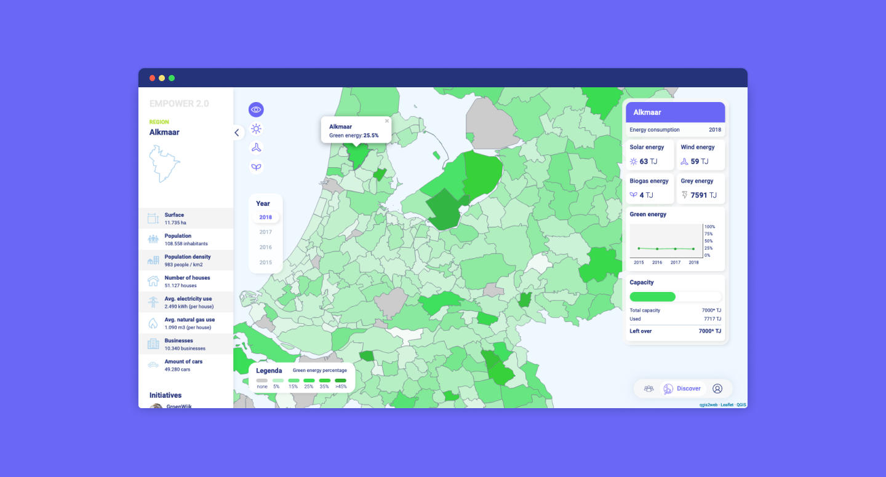
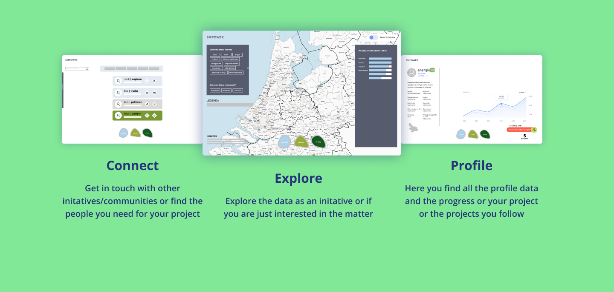
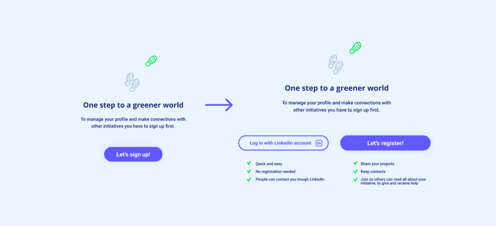
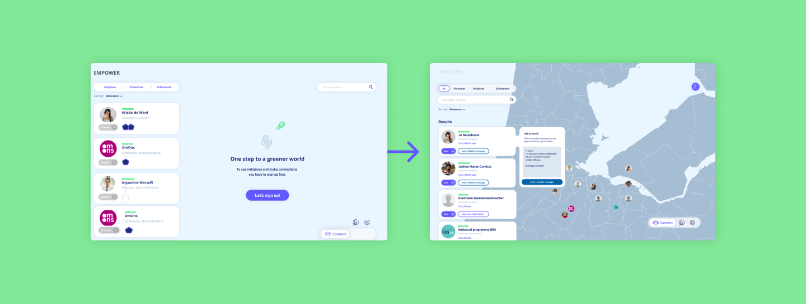

De opdracht
Maak een datavisualisatietool die groene initiatieven en autoriteiten kan helpen het hele plaatje te zien, door ze inzicht te geven of gebieden die bekend staan als hotspots op het gebied van energietransitie écht de gebieden zijn waarop ze hun inspanningen moeten richten. Maar ook een tool die niet-experts kan inspireren. De gemaakte tool kan deel uitmaken van de digitale toolkit van EMPOWER 2.0
Het idee
We hebben de toolkit twee hoofdfuncties geven: discover and connect. Je komt gelijk op het discover scherm. Data staat hier centraal, letterlijk en figuurlijk. Initiatieven en non-experts kunnen hier alle data bekijken, onderzoeken en kennis uit halen. Het tweede deel van de toolkit is connect. Want de omschakeling naar groene energie doe je niet alleen, maar met de hele communitie. Als laatste hebben we na gedacht over een profiel pagina waar de initiatieven zelf hun projecten kunnen delen en zonodig hulp bieden of vragen.
Tijdens dit project hebben wij gewerkt van lo-fi naar hi-fi prototype en deze voorgesteld aan de opdrachtgever.
Inloggen, wel of niet?
De vraag was of gebruikers zich wel echt gaan aanmelden in de toolkit. Het vermoedde was dat zij niet dagelijks zullen terugkeren. Het aanmelden moest anders kunnen en/of eenvoudiger. Onze oplossing was om een link te leggen met registreren via LinkedIn. Zo kunnen de gebruikers nog steeds met elkaar in contact komen en is het registreren een stuk eenvoudiger! Alsnog bestaat de optie om te registreren. De verbeterde versie laat de voordelen zien van beide registreer opties.
Connect
Deze verandering is ook terug te zien in de connect pagina. Je kunt initiatieven en enthousiastelingen bereiken via LinkedIn. Ook hebben we de data naar voren gebracht. Zo ziet de gebruiker in één opslag waar initiatieven gelegen zijn. Je hoeft niet meer eerst ingelogd te zijn om dit te zien.
Online prototype
Het online prototype is hier te bekijken. Voor het ontwikkelen van dit prototype hebben wij bestaande data gebruikt. Ontdek zelf waar in Nederland potentie ligt bij de transitie naar groene energie.

Resultaat
● Tookit waar data staat centraal.
● Initiatieven en enthousiastelingen kunnen elkaar bereiken via de toolkit.
● Een communitie die elkaar helpt bij de transitie naar groene energie.